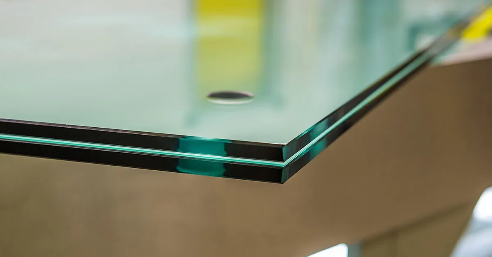

Что выбрать: триплекс или закаленное стекло?

Стойкость к механическим нагрузкам, улучшенные прочностные свойства, надежность – общие черты, которыми производители характеризуют триплекс и закаленное стекло. Эти материалы приобрели популярность довольно давно, и сегодня используются для нужд частного и корпоративного строительства. Несмотря на схожесть, между двумя вариантами остеклениями имеются существенные различия, с которыми стоит ознакомиться клиентам компании «ДизайнСтекло» перед осуществлением заказа.
Триплекс: многослойная структура, отличный внешний вид
Несколько тонких стеклянных листов, которые проклеены прозрачными полимерными составами или пленками – это основа триплекса. За счет многослойной конструкции материал приобрел следующие качества:
-
- Звукоизоляция
В дом не доносятся посторонние звуки с улиц, поскольку с выбором данного формата остекления улучшается общий уровень шумоизоляции здания.
-
- Ударостойкость
Триплекс проблематично повредить или разбить – поверхность очень плотная, но при этом смотрится она хрупкой и невесомой, что позволяет дизайнерам интерьеров найти самые удачные варианты оформления комнат.
-
- Возможность декорирования
-
Украшать поверхность можно при помощи цветных декоративных пленок, а также с применением разнообразных художественных техник.
Клиентам, которые приобретают триплекс в «ДизайнСтекло» стоит учитывать еще несколько особенностей. Материал имеет значительный вес, что несколько сужает рекомендованную сферу применения. Добиться 100% прозрачности поверхности сложно, поэтому светопропускающая способность уменьшается.
Закаленное стекло: абсолютная прозрачность, гарантия безопасности
Технология закалки стекла, которой мастерски владеют сотрудники производственных цехов компании, предполагает разогрев материала в печи до 600 градусов, с последующим резким охлаждением до 40 градусов. При соблюдении требований, готовое сырье демонстрирует такие свойства:
-
- Жаростойкость
Поверхность выдерживает воздействие до 300 градусов по Цельсию.
-
- Безопасность
Сильным и резким ударом стекло, подвергнутое процедуре закалки, разбить удастся. Однако оно рассыпается на безопасные небольшие осколки, о края которых невозможно порезаться.
-
- Отменный уровень светопропускания
Застекленные данным материалом конструкции отлично пропускают солнечный свет. Это позволяет создать в здании атмосферу комфорта, и отказаться от использования искусственного освещения в светлое время суток.
Пользуясь услугой по закалке важно принимать в учет тот факт, что каленое стекло после охлаждения уже не поддается корректировке и обработке. Все необходимые действия мастера делают до помещения заготовки в разогретую печь.
Сфера применения
В процессе выбора материалов стоит изучить рекомендованные сферы применения. Из триплекса получаются превосходные лобовые стекла для легковых автомобилей и прочих видов транспорта, витрины и фасады, козырьки и ограждения. Листы закаленного стекла используют для создания душевых кабинок, изготовления интерьерных перегородок, монтажа конструкций для остекления террас, веранд, балконов и лоджий.